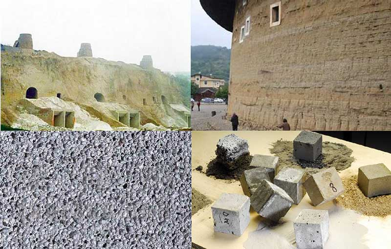
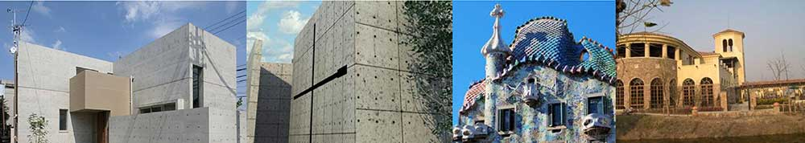
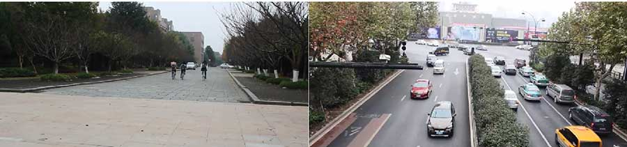
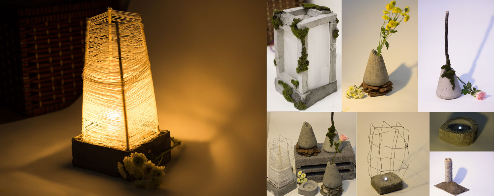

2014.10 ~ 2015.01
Innovation
Culture Design
Course Project
Zhejiang University, Hangzhou
Supervised by Designer Lei Zhang
Culture & People Research
Problem Define
Soil Design
The goal of this project was to awake the relationship between people and concrete in China. This is a team work project(Team work with Yiqun Huang, Yong Dai). We started from concrete research, and tried to compare people’s emotion about concrete historically. Finally, we proposed design concept about concret design.
We did a research about the development of concrete in China. Concrete was used to be applied to architecture. Concrete exited in China as early as 3000 ~5000 BC. But there were two gaps in concrete development. Because of the historical reasons, the gaps happened in1900 and 1950. We did not continue our traditional culture of concrete instead of accepting western culture of concrete application.

We compared concrete construction of Japan, Spain and China. We chose masterpieces of Tadao Ando and Gaudi who were famous architects from Japan and Spain. Their works inherited traditional culture successfully while created new modern architecture. But architecture in China now was totally new and did not inherit traditional culture. Cities in China looked almost the same and did not have any feature. By comparing to Japan and Spain, we tried to explore why we did not inherit our traditional culture and what we can do for the current situation of concrete application in China.


People live in concrete world, they get used to it but ignore it. There is no emotional connect between people and concrete even though concrete has been with us for thousands of years.
• Concrete Home Furnishing.
• Reflect the beauty of Concrete.
• Shorten the distane between concrete and people.
• Awaken people's memory and intimacy for concrete.

© 2017 My Profile. All Rights Reserved | Design by Chenghong